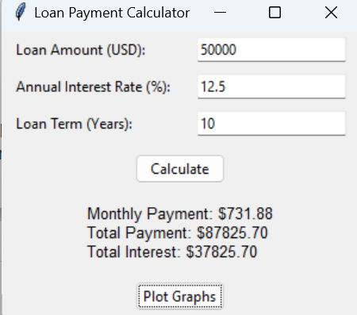
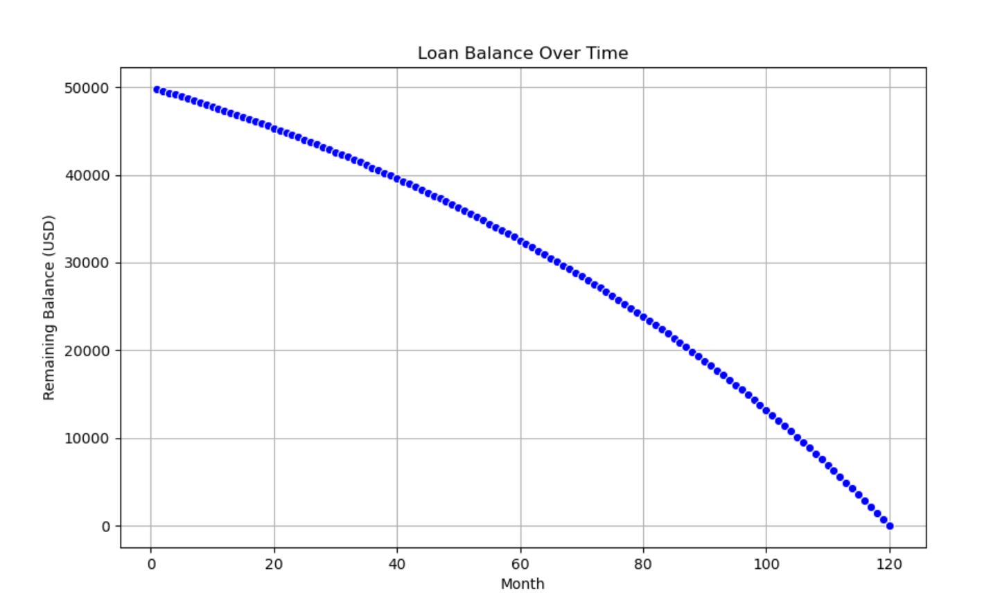

Crawllr
Crawllr is a social city exploration app focused on helping people discover places and experiences in a more interactive way. I co-founded the project and work across product strategy, user experience, and development.
View on the App StoreMarine Learning
Built at William & Mary's inaugural hackathon, Marine Learning is a DenseNet-121 computer vision pipeline that detects and classifies benthic species directly from seafloor footage. A custom random deletion augmentation strategy helped the model reach 95% training accuracy and 94% on the test set.
Advanced Analytics for Mario Kart
A full-stack analytics web app for Mario Kart: Built with Firebase for data storage and synchronization and a React frontend, this web app tracks race results and player performance metrics, providing a fun way for me and my friends to view and compare our stats.
View Analytics DashboardLiamBot – AI Assistant
Meet LiamBot: a nerdy, witty chatbot who says "Erm..." when he's thinking hard. Powered by OpenAI's GPT-4o, he answers questions, drops facts, and occasionally morphs into LiamBron when basketball comes up.
Radiation Data Analysis
View ReportAt C-10 Research & Education Foundation, I analyzed over 10,000 radiation reports across 15 datasets using Excel. With pivot tables, conditional formatting, and charts, I uncovered a 314% variance that led to a 30% faster reporting process, reviewed by the NH Department of Health.
Customer Segmentation Analysis

I used Python and the RFM model to group customers by behavior, then applied K-Means clustering to generate strategic insights. Visualized the segments for stakeholders.
Download Cluster Summary Download Text ReportLoan Payment Calculator
Built an interactive loan repayment calculator using Matplotlib, Seaborn, and Pandas to visualize payoff timelines.


View Code